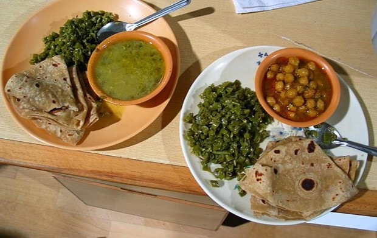
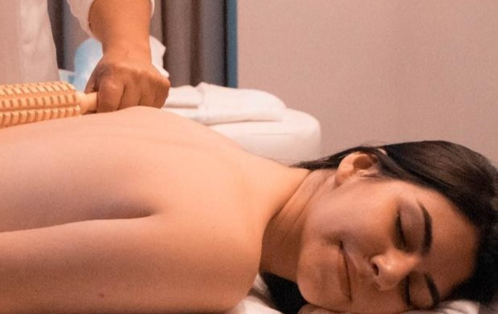

Por:
$40.00
*Todos nuestros planes incluyen 1 comida gratis.
También Puedes Añadir

Desayuno y Almuerzo
Los visitantes disfrutarán de menús basados en ingredientes locales y orgánicos, promoviendo la agricultura sostenible en la región.
$3.00

Spa y Bienestar:
En los eco-lodges, los turistas tendrán acceso a tratamientos de spa que incorporan ingredientes naturales, como barro volcánico y aceites esenciales locales.
$5.00

Acampar
Si tus planes son quedarte y observar como cae la noche, tenemos actividades para que puedas disfrutar con tu familia y amigos/as en nuestro campamento del Cerro La Cruz.